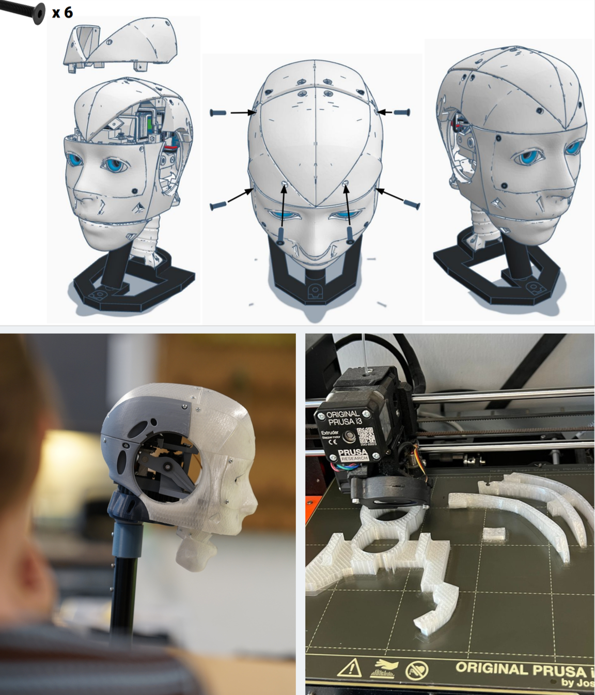
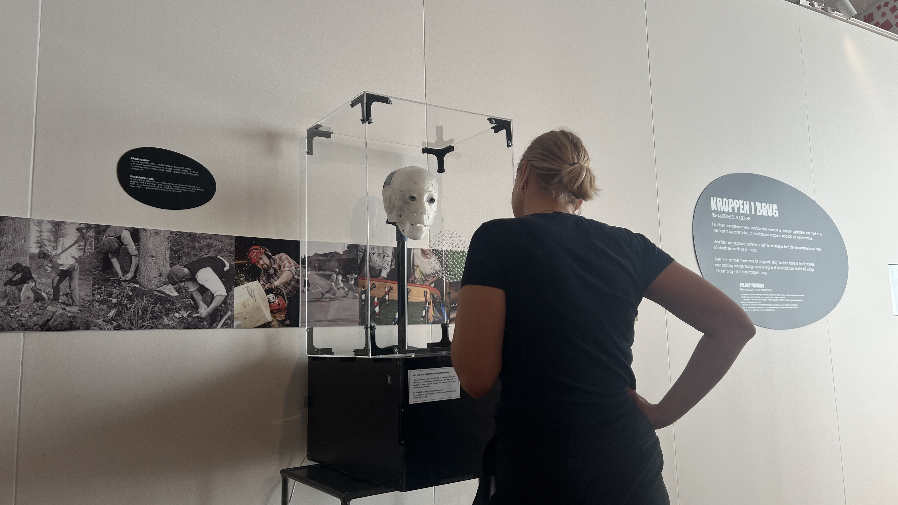

Context
UNIT 12:2 - The Future Consultation was developed as our Master’s thesis in collaboration with Steno Museum in Aarhus.
The project formed part of the museum's work with the exhibition Kære krop, svære krop and focused on how young visitors could be invited to reflect on contraception, responsibility and gender inequality through an interactive museum experience.
Research focus
The project investigated how interactive and speculative design could challenge assumptions about who carries responsibility for contraception.
Rather than creating a neutral educational interface, we explored how surprise, mismatch and discomfort could be used to create reflection and conversation.
Project snapshot
Type: Master’s thesis
Programme: Cand.IT Digital Transformation
Specialisation: Digital Design
Case partner: Steno Museum, Aarhus
Team: Three-person design team
Year: 2026
Methods & approach
Methods:
Research through Design, workshops,
iterative prototyping and qualitative user research
Design approach:
Speculative Design, Discursive Design,
Feminist HCI and embodied interaction

The concept
Visitors enter a fictional future consultation and answer questions about protection, duration and responsibility.
Based on their answers, the robotic doctor produces a contraceptive recommendation.
The recommendation can deliberately mismatch the participant's expectations - for example, a boy may be prescribed the pill.
The interaction
The consultation combines physical interaction, movement, sound and a printed receipt.
The receipt presents information about the recommended method, including use, side effects and protection, together with facts that draw attention to the unequal distribution of contraceptive options between men and women.
What happens when the responsibility for contraception is deliberately placed where we do not expect it?
My role
I developed the project as part of a three-person design team. My work spanned concept development, interaction design, user research, workshop facilitation and Research through Design.
I also contributed to the physical prototyping and technical development of the installation.
Design process
The project developed iteratively through workshops with young participants, prototype testing and ongoing refinement of both the interaction and the physical expression of the robotic doctor.
Findings from each iteration influenced the scenarios, interaction flow and use of deliberate mismatch.

Designing for reflection
The installation was not designed to give visitors a single correct answer.
Instead, it used discursive and speculative design to create situations where familiar assumptions became visible and open to discussion.
Working with young people
Workshops and user tests explored teenagers' knowledge of contraceptive methods and how they discussed responsibility.
These insights became part of the design itself, shaping both the consultation scenarios and the information presented by the installation.
Technology
Arduino Mega
Raspberry Pi
Servo Motors
Thermal Printer
Audio
Physical Computing
Key themes
Contraception
Gender & responsibility
Reproductive inequality
Youth perspectives
Museum interaction
Methods
Research through Design
Interaction Design
Speculative Design
Discursive Design
User Workshops
Iterative Prototyping
Outcome
Interactive museum installation
Physical robotic interface
Printed contraceptive recommendation
Tested with young participants
Developed with Steno Museum